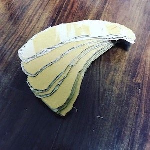
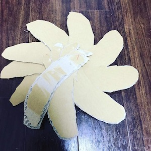
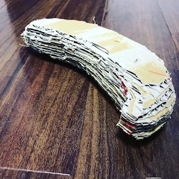
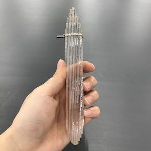
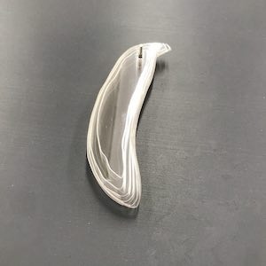
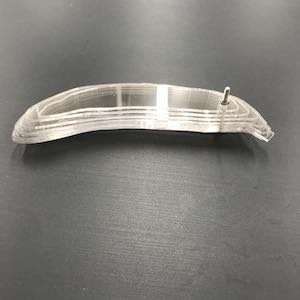

バナナの落し蓋🍌
商品概要
バナナ型の落し蓋
process
バナナの落し蓋を作りたいと思ったきっかけ
・grafさんの「鍋敷きな玉ねぎ」をみて自分もこういう面白くて使えるものが作りたいと思った
鍋敷きな玉ねぎサイト
プロトタイプ①



まず、ダンボールで形を作ってみる。ネジは爪楊枝で代用
プロトタイプ②



rhinocerosでバナナを作ってみる。
pet板をレーザーカッターでスライスバナナ型に切ってみる。
買ってきたステンさら小ねじM３×３０で固定。
ステンレスで外注
rhinocerosで作ったバナナのスライスデータを外注に出す。
厚さ0.5㍉のステンレスから切り出してもらう。
届いたスライスバナナを持ってみる。
めちゃめちゃ重かった。これは失敗したところ。
スライスバナナを固定するネジについて
本当はアルミの平リベットでかしめて締結したかったが、探すのが遅かったのと
長さが長いものが少なかった。リサーチ不足。これも失敗。。